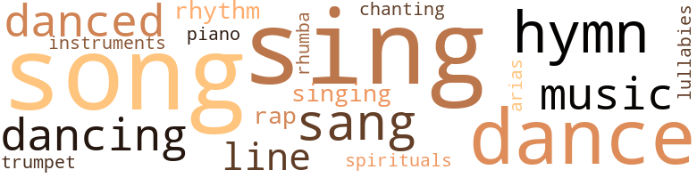
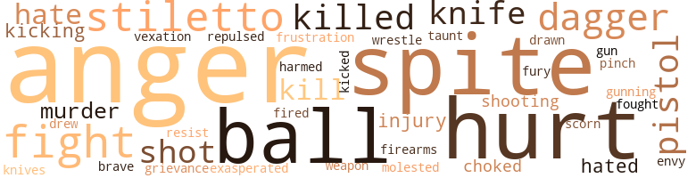
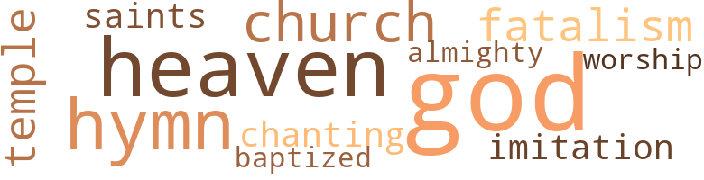

Louisiana Lady, by Easterling, Narena (1941)
56 music-related terms matched in this text.
Most frequent terms in this topic: sing (7); dance (6); songs (5); song (3); music (3)
aria.n.01
Definition: an elaborate song for solo voice
| word | sentence |
|---|---|
| arias | Judy sang ballads , arias , old French folk songs , and still they wanted more . |
cornet.n.01
Definition: a brass musical instrument with a brilliant tone; has a narrow tube and a flared bell and is played by means of valves
| word | sentence |
|---|---|
| trumpet | At the same moment , Grand-père 's voice calling her from the dining room blared out like a trumpet . |
dance.n.01
Definition: an artistic form of nonverbal communication
| word | sentence |
|---|---|
| dances | When she did her songs and dances on a circuit of southern night clubs she used to come home rather frequently . |
| dances | Drawing her close to him , he had kissed her so hard and so long that when he finally released her , the golden stars had been swinging in the wildest of dances . |
| dance | Another dance , Judy , or something to eat ? " |
| dance | " The Forêts will not be going to the dance . |
| dance | D'Estrevan Barns is a fool , though , for taking her to a dance ! |
| dance | " What makes you suppose D'Estrevan Barns would take Conchita Dominique to a dance ? " she asked . |
| dance | He might be there already , for Conchita would want to display him at the supper as well as at the dance ! |
dance.v.02
Definition: move in a pattern; usually to musical accompaniment; do or perform a dance
| word | sentence |
|---|---|
| dancing | She had been dancing about an hour when she saw Adrienne and Pierre enter the ballroom . |
dance.v.03
Definition: skip, leap, or move up and down or sideways
| word | sentence |
|---|---|
| dancing | Everyone who has lived in southern Louisiana has seen them dancing around old sugar mills at night . " |
| danced | But Adrienne would toss her black head , grimace with her thin red lips unbelieving , uncomprehending - which might have been a heritage from her mother who danced in Cuba , on boats of passage , in cafés of the old French quarter of New Orleans , and so not entirely Rienne 's fault . |
| danced | D'Estrevan cut in on Rienne almost at once , and danced with her several times within the next hour . |
| dance | " It wo n't be wicked to dance and frolic all night , though ! " |
| dancing | She could see kerosene lamps with tin reflectors that were hung on the upright pieces ; could see people dancing on the new floor . |
| danced | We danced together many times . |
hymn.n.01
Definition: a song of praise (to God or to a saint or to a nation)
| word | sentence |
|---|---|
| hymns | Judy nodded , knowing well how Madame had loved these old French hymns . |
| hymns | As soon as the curé had said a few words , Judy began the first of the two hymns the family had requested . |
| hymns | The hymns finished , she hesitated a moment , then began a third song . |
| hymn | It was not a hymn , but she did not think the young curé would object . |
lullaby.n.01
Definition: a quiet song intended to lull a child to sleep
| word | sentence |
|---|---|
| lullabies | I had thought it would be nice for lullabies . |
music.n.01
Definition: an artistic form of auditory communication incorporating instrumental or vocal tones in a structured and continuous manner
| word | sentence |
|---|---|
| music | " Wilhelm knows music , " Vicki nodded . |
| music | " So do I. Only what we hear nowadays is n't music , usually . " |
| music | " But maybe we 'll hear real music now . " |
musical_instrument.n.01
Definition: any of various devices or contrivances that can be used to produce musical tones or sounds
| word | sentence |
|---|---|
| instruments | " To inform D'Estrevan that his instruments indicated metal at a certain place in one of the fields of the Barns tract ! " |
piano.n.01
Definition: a keyboard instrument that is played by depressing keys that cause hammers to strike tuned strings and produce sounds
| word | sentence |
|---|---|
| piano | She did not feel like singing this evening , but , ashamed of Rienne 's inexcusable rudeness , she went at once to the piano . |
rap.n.05
Definition: genre of African-American music of the 1980s and 1990s in which rhyming lyrics are chanted to a musical accompaniment; several forms of rap have emerged
| word | sentence |
|---|---|
| raps | " The one who could make raps come on furniture without touching it and who told fortunes ? " |
| rap | As she did there was a rap at her door , followed by Leevie 's voice , asking , " Miss Judy , you want yo ' dejeuner in bed ? |
rhythm.n.04
Definition: the arrangement of spoken words alternating stressed and unstressed elements
| word | sentence |
|---|---|
| rhythm | This was the rhythm of their Carribbean Sea-Mexican Gulf storms , all right , but luckily the rhythm did not always accelerate to hurricane intensity . |
| rhythm | This was the rhythm of their Carribbean Sea-Mexican Gulf storms , all right , but luckily the rhythm did not always accelerate to hurricane intensity . |
rumba.n.01
Definition: syncopated music in duple time for dancing the rumba
| word | sentence |
|---|---|
| rhumba | The terrified horse was doing a rhumba . |
sing.v.02
Definition: produce tones with the voice
| word | sentence |
|---|---|
| sing | You will sing at de tomb , Mam ' zelle ? " |
| sang | " Happy birthday to me ! " she sang , her voice a low rich contralto , her tones exquisitely accurate , " Happy birthday to me ! |
| sang | As she sang she forgot everything except the old friend who had taught them to her . |
| sings | " Adrienne sings in one of Mr. Dietenback 's night clubs , Wilhelm , " Estrellita told her brother-in-law . |
| sing | " I 've never heard Miss Adrienne sing , " D'Estrevan interposed a trifle too quickly , too anxiously - Judy saw the shadow of a smile play across Estrellita 's lips - " but if her voice is anything like her sister Judy 's - '' " This party last Christmas , '' Wilhelm continued , his heavy voice dominating the table - One might as well try to stop a tank by letting a few chipmunks run into its path as to try to stop him by side-remarks ! |
| sing | Perhaps , " she smiled at her guests , " we can induce Adrienne and Judith to sing for us . " |
| sing | " I 'll sing while the rest of you have your coffee and liqueurs . " |
| sing | Judy , feeling her anger rise , determined to keep cool and to sing her best . |
| sing | " I 've heard her sing at Bart 's more than once . |
| sang | Judy sang ballads , arias , old French folk songs , and still they wanted more . |
| sing | Besides I have no de - sire to sing in public . |
singing.n.01
Definition: the act of singing vocal music
| word | sentence |
|---|---|
| singing | She did not feel like singing this evening , but , ashamed of Rienne 's inexcusable rudeness , she went at once to the piano . |
| singing | In one field Cajuns swinging long sharp cane-knives and singing French folk songs . |
song.n.01
Definition: a short musical composition with words
| word | sentence |
|---|---|
| songs | When she did her songs and dances on a circuit of southern night clubs she used to come home rather frequently . |
| song | The hymns finished , she hesitated a moment , then began a third song . |
| song | It was a song Madame loved , one Judy had translated from English into French for her . |
| songs | Judy sang ballads , arias , old French folk songs , and still they wanted more . |
| songs | In some of the songs Vicki and Wilhelm joined . |
| songs | In one field Cajuns swinging long sharp cane-knives and singing French folk songs . |
| song | Humming an old French song , Judith got into a pair of riding breeches and completed her workaday costume by pulling a polo shirt over her head . |
| songs | It was Madame who had taught her all the old French folk songs . |
spiritual.n.01
Definition: a kind of religious song originated by Blacks in the southern United States
| word | sentence |
|---|---|
| spirituals | In another , colored folk chanting spirituals as they worked . |
tone.v.01
Definition: utter monotonously and repetitively and rhythmically
| word | sentence |
|---|---|
| chanting | In another , colored folk chanting spirituals as they worked . |
tune.n.01
Definition: a succession of notes forming a distinctive sequence
| word | sentence |
|---|---|
| line | Then came the sons ' wives , their children ; uncles , aunts , cousins ; and after them a long line of friends and acquaintances . |
| line | " Sometimes , Judy , it 's not so easy to be on the receiving end of a line , as it is on the giving end . " |
117 violence-related terms matched in this text.
Most frequent terms in this topic: anger (15); spite (9); hurt (9); ball (7); stiletto (6)
anger.n.01
Definition: a strong emotion; a feeling that is oriented toward some real or supposed grievance
| word | sentence |
|---|---|
| anger | Grandpère swung around , his pleasure corroded into quick anger . |
| anger | " I have something put aside for Adrienne , " he finished a bit wearily , the anger gone from his voice . |
| anger | At that her anger almost equaled his . |
| anger | A moment more of indecision , and her anger blazed anew . |
| anger | Judy , feeling her anger rise , determined to keep cool and to sing her best . |
| anger | Judith , standing very straight by the old dining room table , felt her anger rising not only against herself , Grandpère , Paul , but against D'Estrevan , too . |
| anger | Judith felt anger coursing hot within her . |
| anger | And with the anger came the feminine desire to hurt herself still more . |
| anger | Chita 's throwing away Jean-Ba 's homemade stiletto could have done little except increase his jealous anger , and there were scores of cane-knifes , butcher-knives too , available on the plantation . |
| anger | Judith added in sudden anger at the girl 's foolishness . |
| anger | Judith felt her face grow hot and her heart grow cold with anger . |
| anger | Judith felt herself stiffen with anger . |
| anger | D'Estrevan with a quick flush of anger , looked from Paul to Judith . |
| anger | The next moment her brown eyes were ablaze with anger . |
| anger | Judith who had stopped just inside the door and stood listening , felt her boundless relief give place to anger . |
annoyance.n.02
Definition: anger produced by some annoying irritation
| word | sentence |
|---|---|
| vexation | Judith stopped short and stood a moment biting her lower lip in vexation . |
contemn.v.01
Definition: look down on with disdain
| word | sentence |
|---|---|
| scorn | Judy smiled in amused scorn . |
dagger.n.01
Definition: a short knife with a pointed blade used for piercing or stabbing
| word | sentence |
|---|---|
| dagger | On it were several files , a sharp stiletto and metallic dust indicating that Jean-Ba had made the dagger from a butcher-knife . |
| dagger | Since they entered the room the girl 's eyes had been on the dagger . |
| dagger | As she reached the front door , Chita raised her right hand , and Judith saw the dagger describe an arc through the air and fall with a splash into the bayou . |
| dagger | It was evident Jean-Ba might be expected home any moment now , otherwise she did not think Conchita would have taken the dagger and disposed of it before her . |
| dagger | Jean-Ba must have made jealous threats or Chita would not be slipping here in his absence to destroy the dagger . |
draw.v.23
Definition: pull (a person) apart with four horses tied to his extremities, so as to execute him
| word | sentence |
|---|---|
| drawn | Getting quietly out of bed , she stood looking down at ' Tite Rienne who was sleeping soundly , her hands clasped , her legs drawn up . |
| drew | Berthe , back from the hospital , came out with baby Levin in her arms as Judith drew rein before the new gate . |
envy.n.01
Definition: a feeling of grudging admiration and desire to have something that is possessed by another
| word | sentence |
|---|---|
| envy | Alicia 's voice was brittle with envy . |
fight.n.05
Definition: a boxing or wrestling match
| word | sentence |
|---|---|
| fight | If only they had less fatalism and more fight in them ! |
| fight | If I do n't put up a fight , she 'll monopolize you ! " |
| fight | Did he really have a fight with D'Estevan ? " |
| fights | His new back yard was lively with dogs in various stages of convalescence from fights , broken legs , snake-bite . |
| fight | But after all , I did start the fight , being unable to live up to the nineteen-forty marital code . |
| fight | I 'd have held my own in the fight if I had n't been full of typhoid and malaria . |
fight.v.02
Definition: fight against or resist strongly
| word | sentence |
|---|---|
| fought | I fought against it . |
| fight | Sometimes I think , dear , that you fight against happiness ! |
firearm.n.01
Definition: a portable gun
| word | sentence |
|---|---|
| firearms | This being La Veille de La Toussaint - Hallowe'en - the Cajuns would be shooting off firearms from now until daybreak to scare away the evil spirits , for of course they all knew on the eve of All Saints ' Day , the air was full of spirits , good and bad ! |
frustration.n.03
Definition: a feeling of annoyance at being hindered or criticized
| word | sentence |
|---|---|
| frustration | She lay down on the old settee , her face in her hands , so swamped in a feeling of utter frustration that she jumped in startled surprise when there was a crunch of gravel on the driveway . |
fury.n.01
Definition: a feeling of intense anger
| word | sentence |
|---|---|
| fury | Then I went to work like fury so that I could give you everything . |
gag.v.06
Definition: cause to retch or choke
| word | sentence |
|---|---|
| choked | I did n't intend - " " No use - talking about - that now ! " she choked . |
| choked | And something in Doctor Leblanc 's manner made me fear that is going to be " - she choked a moment , then finished bravely - " weeks . |
grudge.n.01
Definition: a resentment strong enough to justify retaliation
| word | sentence |
|---|---|
| grievance | " Sister , if there is something serious troubling you , ca n't you tell me ? " she begged , forgetting for the moment her own grievance against Rienne . |
gun.n.01
Definition: a weapon that discharges a missile at high velocity (especially from a metal tube or barrel)
| word | sentence |
|---|---|
| gun | And he was not allowed to have a gun . |
gun.v.01
Definition: shoot with a gun
| word | sentence |
|---|---|
| gunning | But if he is out gunning for one man and shoots another , even by mistake , he commits a crime . " |
harm.v.01
Definition: cause or do harm to
| word | sentence |
|---|---|
| harmed | Apparently the heavy flashlight had not harmed his thick skull . |
hate.v.01
Definition: dislike intensely; feel antipathy or aversion towards
| word | sentence |
|---|---|
| hate | I am sure I would hate being one ! " |
| hate | I hate deceit ! " |
| hated | She hated lowering herself before a tenant , and to the point of trying to make him believe that it was with her D'Estrevan wanted an affair ! |
| hate | I hate him ! " |
| hated | And Paul had , secretly , hated poverty so much more than she had . |
hurt.v.04
Definition: cause damage or affect negatively
| word | sentence |
|---|---|
| hurt | " He probably did n't want to hurt your feelings , " Judy said , and started toward her room . |
infuriate.v.01
Definition: make furious
| word | sentence |
|---|---|
| exasperated | " But if you prefer that we drink at Beaux Arbres - " Judith felt suddenly exasperated . |
injury.n.01
Definition: any physical damage to the body caused by violence or accident or fracture etc.
| word | sentence |
|---|---|
| hurt | " Aunt Vicki was the Baroness von Littenthall before her marriage to Uncle Wilhelm , " D'Estre-van supplied ; and apologized as he and Judy moved off together , " She always feels hurt if we do n't mention the fact . " |
| hurt | It took her several minutes to conquer her hurt pride and to be thankful that D'Estrevan had been near , with the means and the willingness to help Berthe . |
| injury | And as he continued to be concerned only with her injury , she called , " Conchita , come here ! " |
| hurt | " I , who am of little help in the fields , can sometimes aid animals who are sick or hurt . |
| injury | " His injury was an accident , " she began , " but - " " Oh , Judy , how wonderful you are to forgive me I " D'Estrevan 's brown eyes shone with relief . |
kick_back.v.02
Definition: spring back, as from a forceful thrust
| word | sentence |
|---|---|
| kicking | She tried kicking at his sides , sawing on his bit . |
| kicking | " She 's been kicking up her legs in public too long already ! " |
| kicked | D'Estrevan kicked the steps of the stile angrily with his highly-polished shoes . |
kill.v.10
Definition: cause the death of, without intention
| word | sentence |
|---|---|
| killed | I killed him . |
| kill | Anyhow , if you step off this plantation , I 'll get up and kill him myself . |
| kill | He will kill D'Estrevan and you ! " |
| killed | You just did n't want to see me killed . |
| kill | I 'm cured of shootin ' to kill - I reckon . " |
| killed | " God Almighty , " he cried at sight of the wounded temple , " I could n't have - killed him ! |
| killed | " Even young men - like Paul - often - get killed ! " |
knife.n.02
Definition: a weapon with a handle and blade with a sharp point
| word | sentence |
|---|---|
| knife | As if Jean-Ba could not get another knife ! " |
| knife | Judith saw her go to the side of the road , hide the knife , mark the place . |
| knife | Just let mongrel Barns monkey around too much with Jean-Ba 's black-eyed hussy and he 'll wake up dead , with a knife in his back ! " |
| knife | If Jean-Ba sticks a knife in him , it 'll save me the trouble of taking a shot at him . " |
| knives | Doing it not only because the gold and silver coins it contained - over three - over three hundred dollars ' worth - had belonged to his father , nor because the spoons , knives and forks were those he had used as a child and had seen his mother handle , but also because dwelling on these early days kept his mind from Tante José . |
malice.n.01
Definition: feeling a need to see others suffer
| word | sentence |
|---|---|
| spite | In spite of herself , Judy felt some of her happiness over Paul 's gift oozing away . |
| spite | It was still such a fine old place , in spite of neglect and misuse . |
| spite | The dinner , in spite of a faultless cuisine and perfect service , would have been a failure with any hostess less adept than Estrellita . |
| spite | " How foolish of Dadda Melançon to hold spite so long ! " she sighed . |
| spite | I envy them , but - " " But , " D'Estrevan finished the sentence for her , " in spite of your quaint ideas and your sincerity in expressing them , you are going to marry me ! |
| spite | So , in spite of Judy 's struggles , he drew her to him , so close that it hurt . |
| spite | So this morning , in spite of her warning to herself , Judith bought lavishly and happily for the coming holidays , because something deep inside her was giving her the assurance that Paul 's surprise , excitement , the new light in his deep blue eyes , had nothing at all to do with Adrienne . |
| spite | In spite of the comedy being enacted on the step below her , she had caught and was holding the attention of every one in the station . |
| spite | " Sorry , Mr. Barns , but there 's that little matter of the ' spite fence , ' as you call it . |
molest.v.01
Definition: harass or assault sexually; make indecent advances to
| word | sentence |
|---|---|
| molested | But thank heavens , I succeeded in catching a taxi for the Têche Bus Station without being molested . |
murder.n.01
Definition: unlawful premeditated killing of a human being by a human being
| word | sentence |
|---|---|
| murder | " I ca n't let Jean-Ba murder D'Estrevan Barns ! " |
| murder | It would have been terrible to have let murder enter there ! |
musket_ball.n.01
Definition: a solid projectile that is shot by a musket
| word | sentence |
|---|---|
| ball | Judith knew that the tenants of Beaux Arbres and several of the surrounding plantations were going to hold this year 's ball in Gros Gaspin 's new house , which was on a chênière , down on Last Bayou . |
| ball | " But Judy must come upstairs with me now and open the ball ! " |
| ball | Yet someone must warn D'Estrevan I If he had been careless or ignorant enough to go to the Cajun ball with Chita Dominique , his life was in danger ! |
| ball | With nothing else to do , he might think a Cajun ball a bit of local color it would be fun to see . |
| ball | But now in the distance she could glimpse the lights of the ball . |
| ball | Then , at Jean-Ba 's scowl , hastened to explain , " You can be married tonight by Monsieur Dupre , the Justice , who is , I presume , attending the ball ? " |
| ball | Another cruiser was already anchored there , and there was a masquerade ball in progress on it . |
open_fire.v.01
Definition: start firing a weapon
| word | sentence |
|---|---|
| fired | The sight of a snake or - " " Anyhow , she had barely time to run to the door when Grandpère pushed past her and fired . " |
pain.v.02
Definition: cause emotional anguish or make miserable
| word | sentence |
|---|---|
| hurt | Yet , Judy thought , Tante José had cause to be thoroughly angry this morning and , being herself , she would want to hurt me because Grandpère had given me the pearls and said he was going to leave me Beau Arbres . |
| hurt | At that , Judith turned and looked at him aghast , hurt as she had not dreamed anything could hurt her again after Paul 's answer over the telephone ! |
| hurt | She was hurt and angry with the whole family . |
| hurt | Judith stopped , fearing Jean-Ba might hurt the girl . |
| hurt | If he really loved me , he could n't have stayed away after he learned I had been hurt . |
pinch.n.02
Definition: an injury resulting from getting some body part squeezed
| word | sentence |
|---|---|
| pinch | Judith 's own lovely lips tightened as she noticed the old Senorita give Dette an ugly pinch , purposely digging her fingernails in until she broke the smooth young café-au-lait skin . |
pistol.n.01
Definition: a firearm that is held and fired with one hand
| word | sentence |
|---|---|
| pistol | Suddenly the sound of a pistol shot snapped through the air . |
| pistol | Those pistol shots had recalled to her mind the fact that tomorrow was La Toussaint . |
| pistols | Judy did n't mind their superstitions nor their firing of pistols ; what she objected to was tomorrow 's being another holiday ! |
| pistol | When I reached the gates I heard Rienne 's scream , then I heard a pistol shot followed by a man 's hoarse cry . |
repel.v.03
Definition: force or drive back
| word | sentence |
|---|---|
| repulsed | Judy felt repulsed . |
resist.v.04
Definition: withstand the force of something
| word | sentence |
|---|---|
| resist | " It so evidently belongs with the cream and gold of you , I could not resist buying it , " Estrellita had written in delicate half-apology of the elaborate , expensive gift . |
shoot.v.02
Definition: kill by firing a missile
| word | sentence |
|---|---|
| shot | Pains shot through her shoulder . |
| shot | " Last night , dear , just as I started to come for you , your grandfather shot a man - accidentally . |
| shot | So - Grandpère had shot this man thinking him D'Estrevan Barns , and D'Estrevan 's mother stood there knowing he had done so ! |
| shot | It would be ghastly if her grandfather shot D'Estrevan Barns some day ! |
shooting.n.02
Definition: killing someone by gunfire
| word | sentence |
|---|---|
| shooting | So she said in a voice from which all the natural rich warm tones were lacking , " Would it be asking too much of you to tell me exactly how the shooting occurred ? " |
| shooting | " I presume it was the shooting which kept you from coming for me ? " she asked . |
stiletto.n.01
Definition: a small dagger with a tapered blade
| word | sentence |
|---|---|
| stiletto | On it were several files , a sharp stiletto and metallic dust indicating that Jean-Ba had made the dagger from a butcher-knife . |
| stiletto | There was an old boot on the table too , and made of leather cut from the boot-top , an almost completed sheath for the stiletto . |
| stiletto | But as quick as the thought , Chita dashed across the room , grabbed up the stiletto and ran outdoors . |
| stiletto | " I can ask Grandpère to speak firmly to him about beginning to cut the cane at once , " her thoughts continued , " but I can not tell him about the stiletto . |
| stiletto | The memory of Jean-Ba 's stiletto came like a sharp thrust across Judith 's mind . |
| stiletto | Chita 's throwing away Jean-Ba 's homemade stiletto could have done little except increase his jealous anger , and there were scores of cane-knifes , butcher-knives too , available on the plantation . |
twit.n.02
Definition: aggravation by deriding or mocking or criticizing
| word | sentence |
|---|---|
| taunt | As she made no reply to his taunt , D'Estrevan , moving closer to her , tried other tactics . |
weapon.n.01
Definition: any instrument or instrumentality used in fighting or hunting
| word | sentence |
|---|---|
| weapon | Why was Jean-Ba making such a murderous-looking weapon ? |
weather.v.01
Definition: face and withstand with courage
| word | sentence |
|---|---|
| brave | " Almost there , my brave ones ! " she called out , gaily saluting them . |
wrestle.v.01
Definition: combat to overcome an opposing tendency or force
| word | sentence |
|---|---|
| wrestle | She liked to cook well enough , but she was in no mood this afternoon to wrestle with the big old wood stove . |
28 religion-related terms matched in this text.
Most frequent terms in this topic: God (7); heaven (4); hymns (3); church (3); temple (2)
baptize.v.01
Definition: administer baptism to
| word | sentence |
|---|---|
| baptized | " Had he been - " " Yes , " Adrienne interrupted as if her mind were on something else and this were information she had to transmit , " he had administered extreme unction to Madame Forêt , and baptized Berthe 's baby . |
church.n.02
Definition: a place for public (especially Christian) worship
| word | sentence |
|---|---|
| church | A full busy life here on earth , and through her belief in God and her church , the hope of even a better life after this one ! |
| church | I will buy you a white dress , Chita , for the church wedding ; and I will have a wedding supper on the lawn of Beaux Arbres . |
| church | At Jean-Ba 's , Chita was preparing for the wedding supper which was to follow her deferred church wedding . |
eden.n.01
Definition: any place of complete bliss and delight and peace
| word | sentence |
|---|---|
| heaven | In heaven 's name , why not ? " |
| heaven | But even that kind of a life had been almost heaven so long as she thought he loved her as she loved him , and wanted her above all others . |
| heaven | " Then what in heaven 's name are you planning to do with your life ? " |
| heaven | And now , in heaven 's name , tell me what you meant about my wanting to marry ' Tite Rienne ! " |
fatalism.n.02
Definition: a philosophical doctrine holding that all events are predetermined in advance for all time and human beings are powerless to change them
| word | sentence |
|---|---|
| fatalism | At this point Judith lifted her shoulders in one of those gestures , expressive of fatalism and so characteristically French . |
| fatalism | If only they had less fatalism and more fight in them ! |
god.n.03
Definition: a man of such superior qualities that he seems like a deity to other people
| word | sentence |
|---|---|
| God | " For God 's sake , hold a tight rein ! " |
| God | A full busy life here on earth , and through her belief in God and her church , the hope of even a better life after this one ! |
| God | If it did , the Cajuns would merely shrug and say , " Comme le bon Dieu veut " As if it were God 's concern that they had n't roofed their dancing floor . |
| God | God forbid that I have to see another ! " |
| God | Oh , God have mercy I His mouth was so horrible . |
| God | " God Almighty , " he cried at sight of the wounded temple , " I could n't have - killed him ! |
| God | " In God 's name , Rienne , what do you mean ? " |
godhead.n.01
Definition: terms referring to the Judeo-Christian God
| word | sentence |
|---|---|
| Almighty | " God Almighty , " he cried at sight of the wounded temple , " I could n't have - killed him ! |
hymn.n.01
Definition: a song of praise (to God or to a saint or to a nation)
| word | sentence |
|---|---|
| hymns | Judy nodded , knowing well how Madame had loved these old French hymns . |
| hymns | As soon as the curé had said a few words , Judy began the first of the two hymns the family had requested . |
| hymns | The hymns finished , she hesitated a moment , then began a third song . |
| hymn | It was not a hymn , but she did not think the young curé would object . |
imitation.n.01
Definition: the doctrine that representations of nature or human behavior should be accurate imitations
| word | sentence |
|---|---|
| imitation | " You did n't suppose a Melançon would give imitation jewelry to a lady , did you ? " |
saint.n.02
Definition: person of exceptional holiness
| word | sentence |
|---|---|
| Saints | This being La Veille de La Toussaint - Hallowe'en - the Cajuns would be shooting off firearms from now until daybreak to scare away the evil spirits , for of course they all knew on the eve of All Saints ' Day , the air was full of spirits , good and bad ! |
temple.n.03
Definition: an edifice devoted to special or exalted purposes
| word | sentence |
|---|---|
| temple | He wheeled , staggered , fell sidewise , his right temple hitting the edge of the lowest step of the stile . |
| temple | " God Almighty , " he cried at sight of the wounded temple , " I could n't have - killed him ! |
tone.v.01
Definition: utter monotonously and repetitively and rhythmically
| word | sentence |
|---|---|
| chanting | In another , colored folk chanting spirituals as they worked . |
worship.n.01
Definition: the activity of worshipping
| word | sentence |
|---|---|
| worship | You can let me and the rest of the civilized world worship you as the beautiful mistress of Casabella ! " |